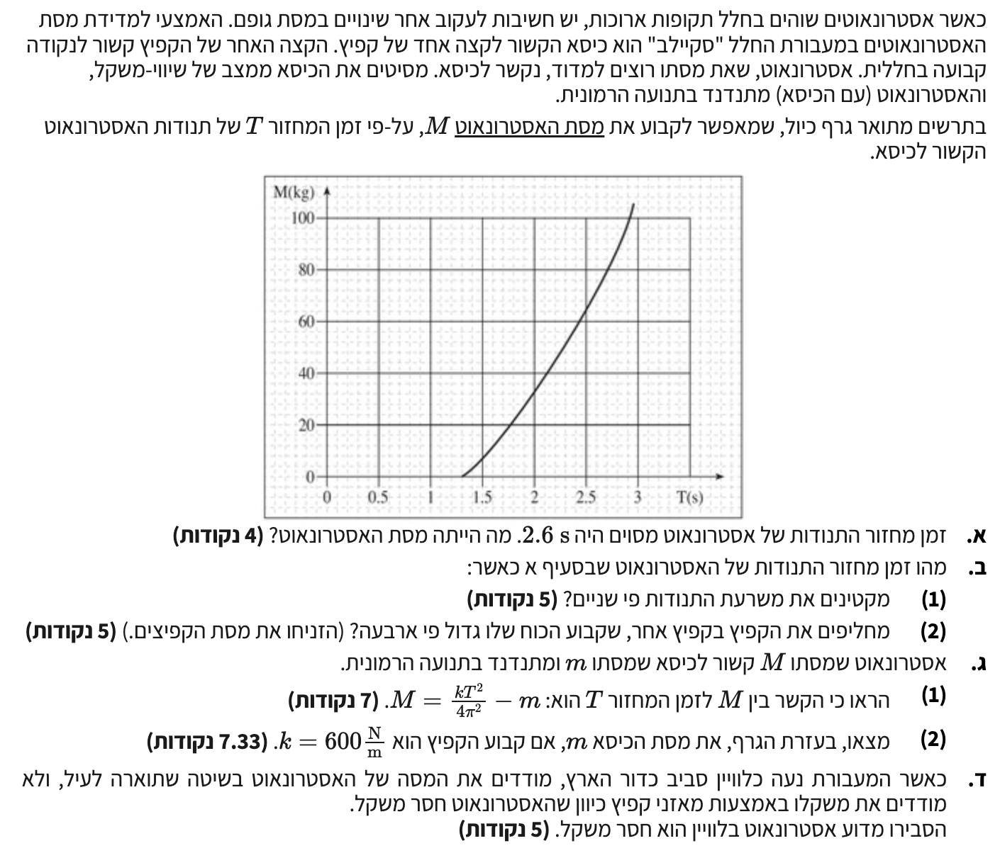

פתרון מלא: בגרות בפיזיקה
מכניקה 2001, שאלה 5
פתרון מודרך וצעד-אחר-צעד, ניתוח כוחות מתנד הרמוני ומעבר לגרף.

סעיף א'
יישום העיקרון של קריאת נתונים מגרף (אינטרפולציה ויזואלית). עלינו להבין את קנה המידה (Scale) של כל ציר כדי לחלץ את הערך המדויק.
פתרון צעד-אחר-צעד:
ראשית, נפענח את קנה המידה של מערכת הצירים בגרף הנתון:
- ציר אופקי (זמן מחזור \(T\)): המרחק בין השנתות המרכזיות הוא \(0.5 \text{ s}\) (למשל, בין \(2\) ל-\(2.5\)). בין כל שתי שנתות כאלה ישנן 5 משבצות קטנות. לכן, כל משבצת קטנה בציר האופקי מייצגת זמן של \(\frac{0.5}{5} = 0.1 \text{ s}\).
- ציר אנכי (מסת האסטרונאוט \(M\)): המרחק בין השנתות המרכזיות הוא \(20 \text{ kg}\) (למשל, בין \(60\) ל-\(80\)). בין כל שתי שנתות כאלה ישנן 5 משבצות קטנות. לכן, כל משבצת קטנה בציר האנכי מייצגת מסה של \(\frac{20}{5} = 4 \text{ kg}\).
כעת נאתר את הנקודה המבוקשת: על ציר ה-\(T\), הערך \(2.6 \text{ s}\) נמצא בדיוק משבצת קטנה אחת ימינה מהשנת של \(2.5 \text{ s}\). נעלה אנכית מנקודה זו אל העקומה, וממנה ננוע אופקית אל ציר ה-\(M\). ניתן לראות כי הנקודה על ציר ה-\(M\) נמצאת 3 משבצות קטנות מעל הקו של ה-\(60 \text{ kg}\). מכיוון שכל משבצת קטנה היא \(4 \text{ kg}\), התוספת היא \(3 \times 4 = 12 \text{ kg}\). לכן המסה היא בדיוק \(60 + 12 = 72 \text{ kg}\).
מסקנה: מסת האסטרונאוט היא \(M = 72 \text{ kg}\).
סעיף ב' (1)
\( \sum F = -cx \) (משוואת כוחות בתנועה הרמונית פשוטה)
\( F_s = k\Delta l \) (חוק הוק)
\( T = 2\pi\sqrt{\frac{m}{c}} \)
ניתוח ופתרון:
התנועה המתוארת היא תנועה הרמונית פשוטה. בדף הנוסחאות, נוסחת זמן המחזור של מתנד הרמוני מופיעה כ-\( T = 2\pi\sqrt{\frac{m}{c}} \), כאשר \(c\) הוא קבוע המחזיר של המערכת, המוגדר מהמשוואה \(\sum F = -cx\).
במקרה שלנו, הכוח המחזיר מסופק על ידי קפיץ. על פי חוק הוק, הכוח שמפעיל קפיץ הוא \(F_s = -kx\) (המינוס מציין שהכוח מנוגד לכיוון ההעתק). מהשוואת שתי הנוסחאות (\(-cx = -kx\)), אנו מסיקים שעבור מערכת מסה-קפיץ, קבוע התנועה ההרמונית \(c\) זהה לקבוע הקפיץ \(k\):
לכן, נוכל לכתוב את נוסחת זמן המחזור כך:
מתוך ההתבוננות בנוסחת זמן המחזור, אנו רואים כי המשתנים היחידים המשפיעים על ערכו של \(T\) הם המסה המתנדנדת \(m\) וקבוע הקפיץ \(k\). אין בנוסחה שום תלות במשרעת (האמפליטודה). מכיוון שהמסה והקפיץ לא השתנו, זמן המחזור יישאר בדיוק כפי שהיה.
מסקנה: זמן המחזור לא משתנה ויישאר \(T = 2.60 \text{ s}\).
סעיף ב' (2)
\( T = 2\pi\sqrt{\frac{m}{c}} \)
חישוב:
כפי שהראינו בסעיף ב'(1), עבור מערכת מסה-קפיץ מתקיים \(c = k\). לכן, נרשום את הביטוי לזמן המחזור החדש ונציב במקום קבוע המערכת \(c\) את קבוע הקפיץ החדש \(4k\). המסה הכוללת במערכת היא קבועה ולכן נסמן אותה כ-\(m_{tot}\).
נוציא את הגורם המספרי מתוך השורש: \(\sqrt{\frac{1}{4}} = \frac{1}{2}\).
אנו מזהים שהחלק הימני של המשוואה הוא בדיוק זמן המחזור הישן \(T_{old}\):
נציב את הנתון המספרי \(T_{old} = 2.6 \text{ s}\):
מסקנה: זמן המחזור החדש לאחר החלפת הקפיץ יהיה \(T = 1.30 \text{ s}\).
סעיף ג' (1)
\( \sum F = -cx \) \( T = 2\pi\sqrt{\frac{m_{tot}}{c}} \)
פיתוח הנוסחה:
נשרטט את תרשים הכוחות למערכת כדי להראות שהכוח היחיד שפועל בציר התנועה הוא הכוח האלסטי של הקפיץ, למרות שהגופים נמצאים בחללית ("חוסר משקל").
![]()
המערכת המתנדנדת מורכבת משני גופים שנעים יחד באותה תאוצה. לכן הם מתנהגים כגוף אחד בעל מסה כוללת \(m_{tot} = M + m\). כפי שהראינו קודם, נציב זאת בנוסחת זמן המחזור (כאשר קבוע הקפיץ מסומן כ-\(k\) והוא שווה ל-\(c\)):
המטרה שלנו היא לבודד את מסת האסטרונאוט \(M\). הצעד הראשון יהיה להעלות בריבוע את שני אגפי המשוואה:
נכפול את שני האגפים ב-\(k\) ונחלק ב-\(4\pi^2\) כדי לבודד את הביטוי שמכיל את המסות, ולאחר מכן נחסר את \(m\):
מסקנה: המשוואה המבוקשת הוכחה.
סעיף ג' (2)
\( M = \frac{k}{4\pi^2}T^2 - m \)
חישוב צעד-אחר-צעד:
נשתמש בנקודה שכבר חילצנו מהגרף בסעיף א': כאשר זמן המחזור הוא \(T = 2.6 \text{ s}\), המסה היא \(M = 72 \text{ kg}\). לכן הנקודה שלנו היא \((T = 2.6 \text{ s}, M = 72 \text{ kg})\).
נציב את הנתונים למשוואה (ניקח \(\pi^2 \approx 10\) לנוחות החישוב, כפי שמקובל לרוב בבחינות בגרות אלא אם צוין אחרת):
נפשט את הביטוי (עם ההנחה המקובלת \(\pi^2 \approx 10\)):
נבודד את \(m\):
הערה: אם נשתמש בערך מדויק יותר \(\pi^2 \approx 9.87\), נקבל: \(72 = \frac{150}{9.87} \cdot 6.76 - m \implies 72 \approx 102.7 - m \implies m \approx 30.7 \text{ kg}\). שתי הגישות תקינות ויזכו במלוא הנקודות.
מסקנה: מסת הכיסא היא \(m \approx 29.4 \text{ kg}\) (בהנחה ש-\(\pi^2 = 10\)).
סעיף ד'
\( \Sigma F = ma \)
עקרון הנפילה החופשית (Free Fall) ומושג המשקל הנראה (Apparent Weight). משקל של גוף אינו כוח הכבידה עצמו (\(mg\)), אלא תגובת המשטח הדוחף את הגוף מעלה – כלומר, הכוח הנורמלי (\(N\)).
הסבר פיזיקלי:
כאשר המעבורת חגה במסלול מעגלי סביב כדור הארץ, היא למעשה מצויה בנפילה חופשית מתמדת בהשפעת כוח הכבידה של כדור הארץ המשמש ככוח צנטריפטלי, ומאיצה פנימה בתאוצת הנפילה המקומית \(g_{loc}\).
האסטרונאוט נופל באותה תאוצה \(a = g_{loc}\). מכיוון שהמעבורת והאסטרונאוט נופלים יחד באותה תאוצה בדיוק, הרצפה של המעבורת לא דוחפת את האסטרונאוט. נפעיל את חוקי ניוטון לכיוון המרכז:
אך מכיוון ש- \(a = g_{loc}\), נציב ונקבל:
מסקנה: קריאת מאזני משקל רגילים שווה לכוח הנורמלי \(N\), ומאחר ו- \(N=0\), המאזניים יראו ערך אפס. תחושה זו נקראת "חוסר משקל", ולכן כדי למדוד מסה בתנאים אלו, חייבים להסתמך על תכונת ההתמד של המסה המודגמת בתנועה הרמונית.
1. מעלית משנה תאוצה 🛗
המשקל שאנו מרגישים (הנקרא בפיזיקה "משקל נראה") הוא למעשה תגובת המשטח, כלומר הכוח הנורמלי (\(N\)) שהרצפה מפעילה עלינו. כוח זה משתנה בהתאם לתאוצת המעלית (\(a\)):
- מעלית מאיצה כלפי מעלה: הרצפה צריכה להפעיל כוח חזק יותר כדי להאיץ אותנו. לפי החוק השני של ניוטון (\(\Sigma F = ma\)), מקבלים: \(N - mg = ma \implies N = m(g+a)\). לכן נרגיש כבדים יותר.
- מעלית מאיצה כלפי מטה: הרצפה כאילו "בורחת" לנו מתחת לרגליים. המשוואה תהיה: \(mg - N = ma \implies N = m(g-a)\). לכן נרגיש קלים יותר.
- נפילה חופשית (למשל אם הכבל נקרע חלילה): המעלית והנוסעים נופלים יחד באותה תאוצה, תאוצת הכובד (\(a=g\)). נציב בנוסחה ונקבל \(N = m(g-g) = 0\). הרצפה לא דוחפת אותנו כלל - זוהי תחושת חוסר משקל מוחלטת!
2. מטוסי אפס כבידה (Zero-G Flights) ✈️
כדי לאמן אסטרונאוטים לפני טיסה לחלל (או לשם מחקר ואטרקציה), סוכנויות חלל משתמשות במטוסים מיוחדים המבצעים טיסה במסלול תלול של פרבולה (מכונים לרוב בחיבה "Vomit Comet"). במהלך ה"צלילה" מטה משיא הגובה, תא הטייס גורם למטוס להאיץ כלפי כדור הארץ בדיוק בתאוצת הנפילה החופשית (\(g\)).
בדיוק כמו בדוגמת המעלית הנופלת, מכיוון שהנוסעים והמטוס נופלים יחד באותה תאוצה, הרצפה לא מפעילה עליהם כוח נורמלי (\(N=0\)). התוצאה היא פרק זמן קצר של כ-20 עד 30 שניות שבו הנוסעים מרחפים בחלל המטוס בחוסר משקל מוחלט.
סרטון הדגמה (מתוך הערוץ של Tom Scott): כך נוסעים נופלים יחד עם המטוס וחווים חוסר משקל (\(N=0\)).